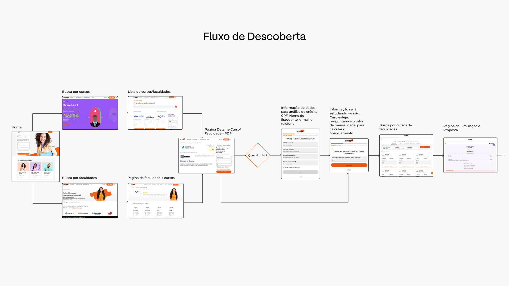
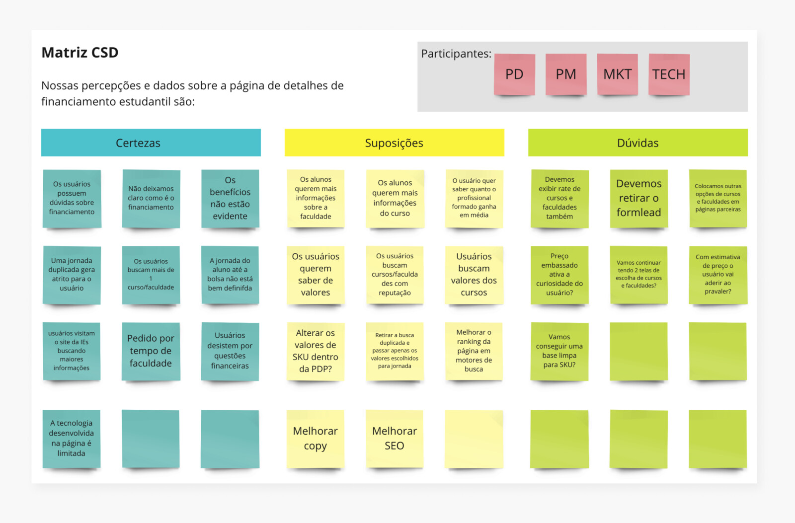
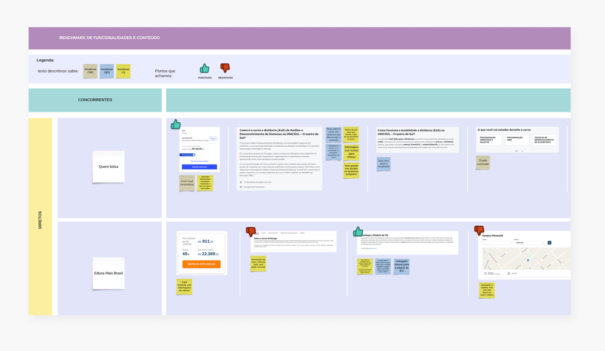
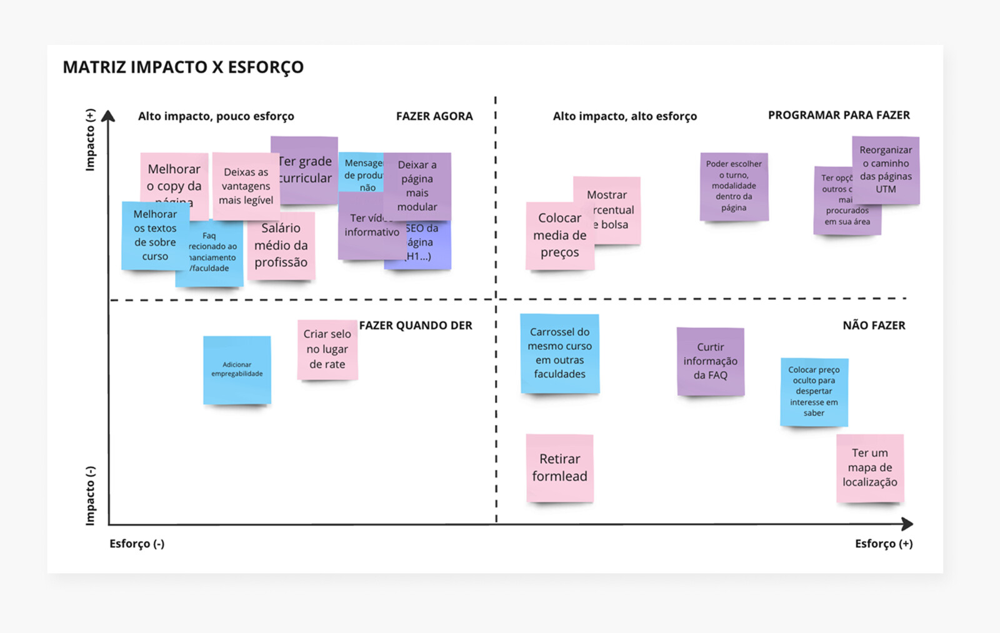
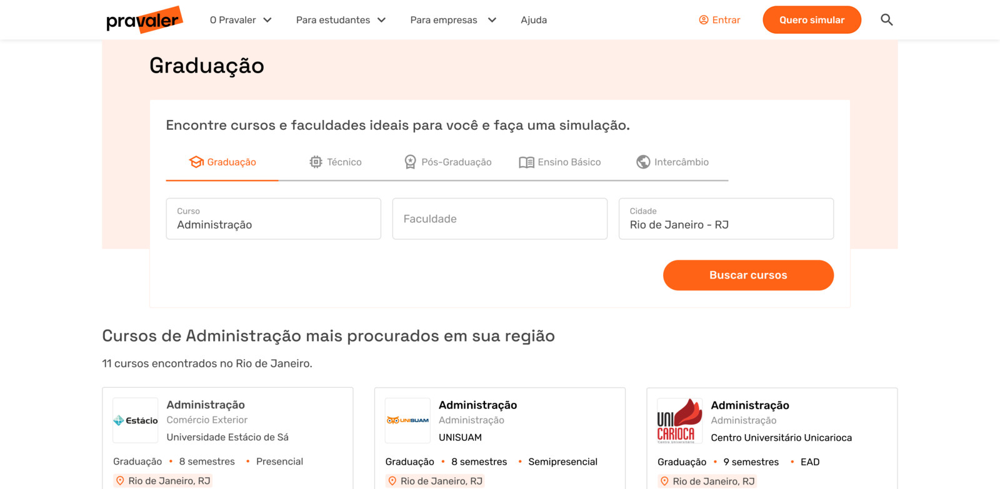
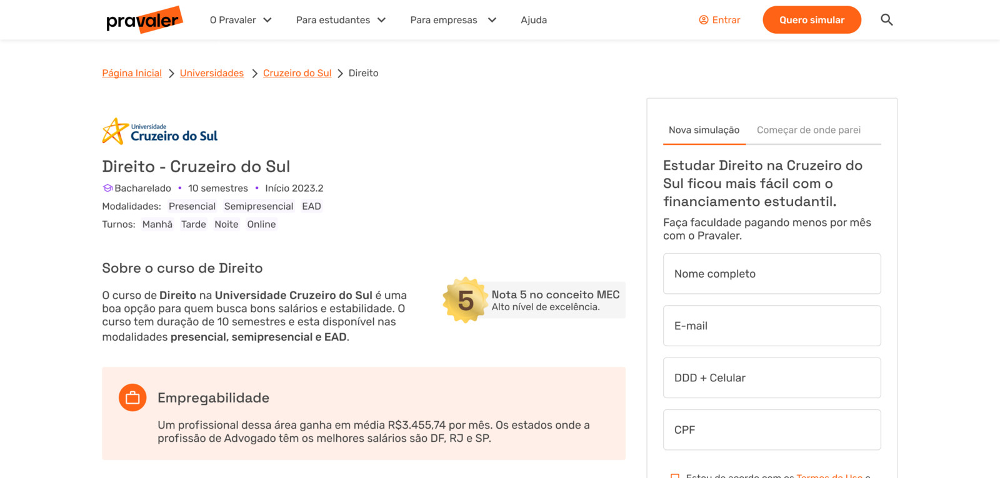
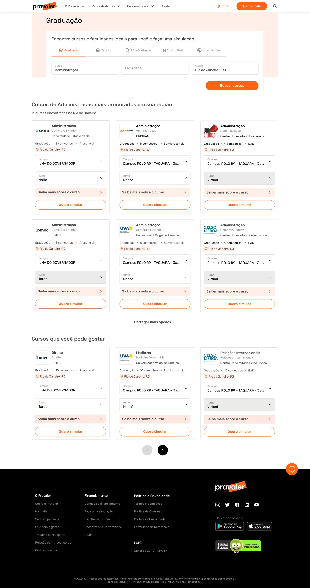
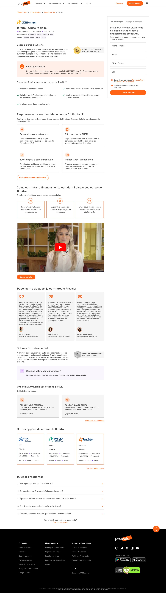

Compreender o financiamento era a maior dificuldade
O usuário não entendia o que estava contratando nem o benefício. Sozinha, essa dor respondia por 13% do abandono.
Recriei a PLP e a PDP da Pravaler para o usuário chegar à proposta com a escolha que já havia feito, sem repetir etapas entre squads. O abandono pela causa principal caiu de 13% para 4%.

A Pravaler é uma fintech de financiamento estudantil, crédito para o aluno pagar a faculdade. A descoberta de cursos vivia numa página legado: lenta, com problemas de acessibilidade e de heurística, e sem comunicar a proposta de valor da marca para quem chegava. E quem chega ali é um público valioso, tráfego incremental e qualificado, que converte bem, mas que na maioria ainda não conhece a marca.
O problema real não era ter passos demais. A decisão de financiar estava quebrada entre duas squads: o usuário escolhia curso e SKU na descoberta e, ao entrar no fluxo de contratação, precisava escolher de novo. A repetição gerava insegurança num processo longo, e ele desistia antes de ver a proposta.
A dificuldade de compreender o financiamento amplificava tudo, respondia por 13% do abandono e tirava a motivação justo onde o esforço era maior. Entrei como único designer do projeto, atuando de ponta a ponta, da descoberta à validação.
Cruzei duas fontes que não conversam entre si: pesquisas de abandono (dropout no Hotjar) e tickets de atendimento do CS. Quando as duas apontam para o mesmo lugar, a chance de estar perseguindo um problema real, e não uma percepção, sobe muito. Sintetizei tudo numa matriz CSD (Certezas, Suposições, Dúvidas), construída com PM, tech e marketing, para separar dado de achismo antes de propor qualquer solução.
O usuário não entendia o que estava contratando nem o benefício. Sozinha, essa dor respondia por 13% do abandono.
Os valores só ficavam claros na simulação da proposta, e apenas cerca de 8% dos visitantes chegavam até lá. A maioria desistia antes de ver o que a convenceria.
Havia dois caminhos para escolher curso e SKU na descoberta e, ao entrar no fluxo de contratação de outra squad, o usuário refazia tudo. Repetição virava insegurança, e insegurança virava desistência.

Liguei o resultado que eu queria mover, reduzir o abandono até a proposta, às oportunidades e às soluções candidatas. Assim eu discutia caminhos, não pixels.
Conduzi uma dinâmica com a squad e stakeholders sobre quatro referências, dois concorrentes diretos e dois players de fora do setor. O grupo votava o que usar e o que descartar. Saí com o escopo do protótipo mapeado e a squad comprada na decisão.
Medi esforço contra impacto junto com tech e cortei o que não fazia sentido na primeira entrega. Nada foi jogado fora: o descartado foi para um parking lot, o que deu previsibilidade de escopo.
Fechei como mediria sucesso antes da primeira tela: o abandono como estrela-guia e um teste A/B controlado como prova. Isso evita comemorar qualquer número no fim.


As decisões da descoberta viraram três movimentos.

Recriei a PLP, que antes não tinha cara de página de listagem, e a PDP para que a escolha de curso e SKU fosse feita uma única vez e viajasse com o usuário para dentro do fluxo de contratação. Ele deixa de reescolher e entra na contratação com o curso já definido.

Em vez de esconder o essencial até a simulação, trouxe a proposta de valor do financiamento e as informações de decisão, modalidade, turno, grade curricular, empregabilidade e selo oficial de avaliação, para a primeira dobra e ao longo da rolagem, com CTA presente em vários pontos. Dar motivo para seguir antes de pedir esforço.
03 · Compliance na exibição de valoresPrecisão de informação financeira não se negocia. Compliance acima de conversão.
Onde havia divergência entre o valor da instituição e o do produto, mostrar um número impreciso era risco de compliance. Optei por não exibir nesses casos e conduzir o usuário à simulação para o número correto.
Comparei a página nova contra a antiga nos dois cursos mais procurados na base, para concentrar o teste onde havia mais demanda e ler o resultado em dez dias. Métrica primária, conversão de visitante em lead: a variante venceu nos dois, com 32% e 29% de aumento.
Deixei a versão com valores de fora do A/B. A página já carregava mudanças demais e incluir os valores contaminaria a leitura. Isolar a variável é o que separa um teste de uma torcida.
Analisei gravações de tela e mapas de calor para achar fricções finas, como o checklist difícil no mobile e a posição das perguntas frequentes. Nada virou correção às pressas: transformei em um backlog priorizado de melhoria contínua.
A causa principal do abandono, medida por dropout no Hotjar e tickets de CS, três meses após o lançamento e com a mesma base.
Conversão de visitante em lead no teste A/B controlado, ante a versão antiga, confirmando a direção no campo.
Publicadas em duas ondas com tech. O style guide e os componentes que criei cortaram um dia na produção de cada nova página.


O style guide e os componentes não entregaram só a PLP e a PDP, baratearam todas as páginas seguintes. Pensar em sistema é o que escala design.
O maior ganho não veio de um truque, e sim de explicar bem o produto, a ponto de o usuário permanecer mesmo sem simular. Conteúdo e proposta de valor são trabalho de design.
O abandono só caiu porque negócio, UX e tech decidiram juntos. Como único designer, meu papel foi costurar SEO, copy, arquitetura e tecnologia, não apenas desenhar telas.